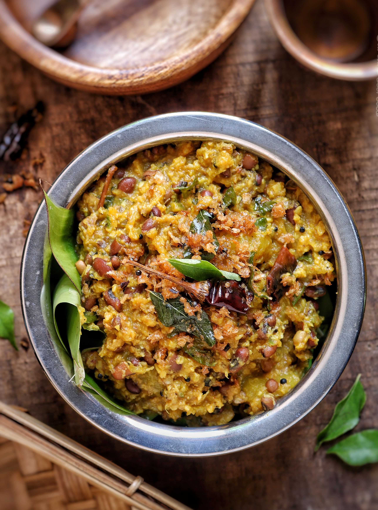

Bean & Quinoa Salad
with Bay Leaves
8 Servings | Vegetarian
- 4 Cloves of Garlic
- 2 Ounces of Sharp White Cheddar Cheese
- 1 Bunch of Cilantro
- 1 Head of Escarole
- 1 Lime
- 1 Jalapeno Pepper
- 1 Poblano Pepper
- 1 Red Onion
- 1/4 Cup of Teff
- 1/2 Teaspoon and Ground Coriander
- 1/2 Teaspoon and Ground Cumin
- 1 15 Ounce Can of Cannellini Beans
- 1 14.5 OUnce Can of Diced Tomatoes
- 1 Cup of Vegetable Broth
Ingredients
- Bring the quinoa and water to a boil in a saucepan over high heat. Reduce heat to medium-low, cover, and simmer until the quinoa is tender, and the water has been absorbed, 15 to 20 minutes. Scrape the quinoa into a large bowl, and refrigerate until cold.
- In a medium pot, heat a little olive oil on medium until hot. Add the onion, garlic, poblano pepper, and diced jalapeño; cook 4 to 6 minutes, or until the onion and peppers are softened, stirring occasionally; season with salt and pepper.
- Stir the garbanzo beans, cranberries, raisins, almonds, mint, coriander, cumin, and olive oil into the quinoa. Season to taste with salt and pepper.
- Divide the quinoa between 8 bowls. If you like spicy food, garnish with the habenero peppers. Enjoy!
Instructions
Cook the Quinoa:
Cook the Vegetables:
Add the beans, and everything else:
Plate your dish: